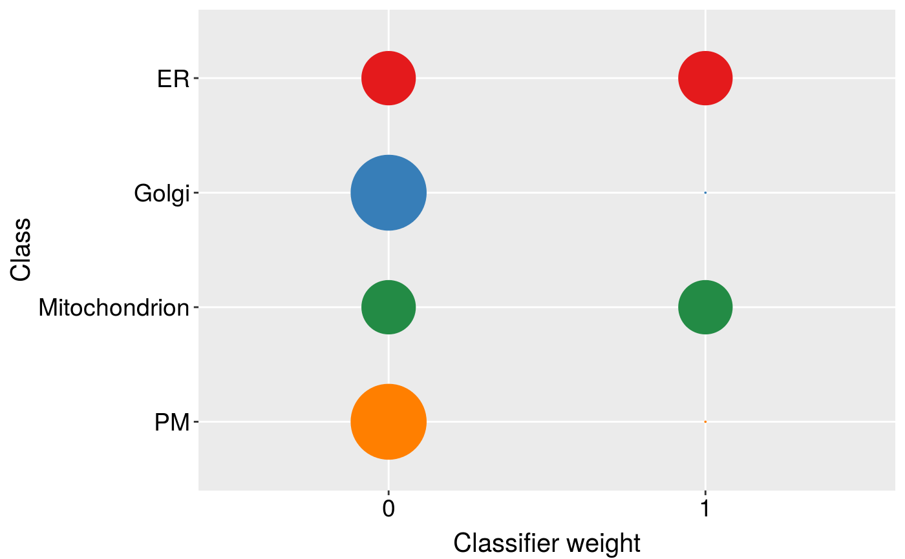

R/machinelearning-functions-knntl.R
knntlClassification.RdClassification using a variation of the KNN implementation of Wu and Dietterich's transfer learning schema
knntlClassification(primary, auxiliary, fcol = "markers", bestTheta, k, scores = c("prediction", "all", "none"), seed)
| primary | An instance of class |
|---|---|
| auxiliary | An instance of class
|
| fcol | The feature meta-data containing marker definitions.
Default is |
| bestTheta | Best theta vector as output from
|
| k | Numeric vector of length 2, containing the best |
| scores | One of |
| seed | The optional random number generator seed. |
A character vector of the classifications for the unknowns
library(pRolocdata) data(andy2011) data(andy2011goCC) ## reducing calculation time of k by pre-running knnOptimisation x <- c(andy2011, andy2011goCC) k <- lapply(x, function(z) knnOptimisation(z, times=5, fcol = "markers.orig", verbose = FALSE))#> Warning: NaNs found in 'precision' with hyperparameters k:11.#> k k #> 7 3## reducing parameter search with theta = 1, ## weights of only 1 or 0 will be considered opt <- knntlOptimisation(andy2011, andy2011goCC, fcol = "markers.orig", times = 2, by = 1, k = k)#>#> #>opt#> Object of class "ThetaRegRes" #> Algorithm: theta #> Theta hyper-parameters: #> weights: 0 1 #> k: 7 3 #> nrow: 16 #> Design: #> Replication: 2 x 5-fold X-validation #> Partitioning: 0.2/0.8 (test/train) #> Results #> macro F1: #> Min. 1st Qu. Median Mean 3rd Qu. Max. #> 0.8621 0.8772 0.8923 0.8923 0.9074 0.9225 #> best theta: #> ER Golgi Mitochondrion PM #> weight:0 2 2 0 2 #> weight:1 0 0 2 0res <- knntlClassification(andy2011, andy2011goCC, fcol = "markers.orig", th, k) res#> MSnSet (storageMode: lockedEnvironment) #> assayData: 1371 features, 8 samples #> element names: exprs #> protocolData: none #> phenoData #> sampleNames: X113 X114 ... X121 (8 total) #> varLabels: Fraction.information #> varMetadata: labelDescription #> featureData #> featureNames: O00767 P51648 ... O75312 (1371 total) #> fvarLabels: Accession.No. Protein.Description ... knntl (12 total) #> fvarMetadata: labelDescription #> experimentData: use 'experimentData(object)' #> Annotation: #> - - - Processing information - - - #> Loaded on Fri Sep 23 15:43:47 2016. #> Normalised to sum of intensities. #> Added markers from 'mrk' marker vector. Fri Sep 23 15:43:47 2016 #> MSnbase version: 1.99.2